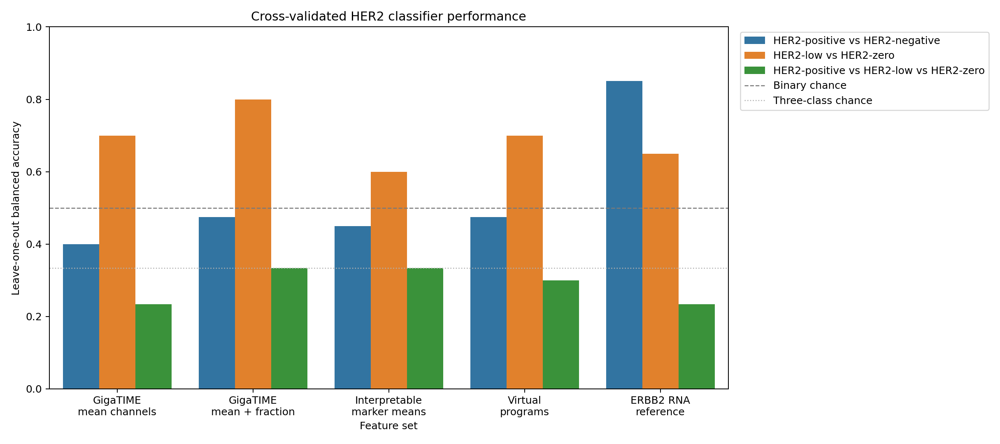
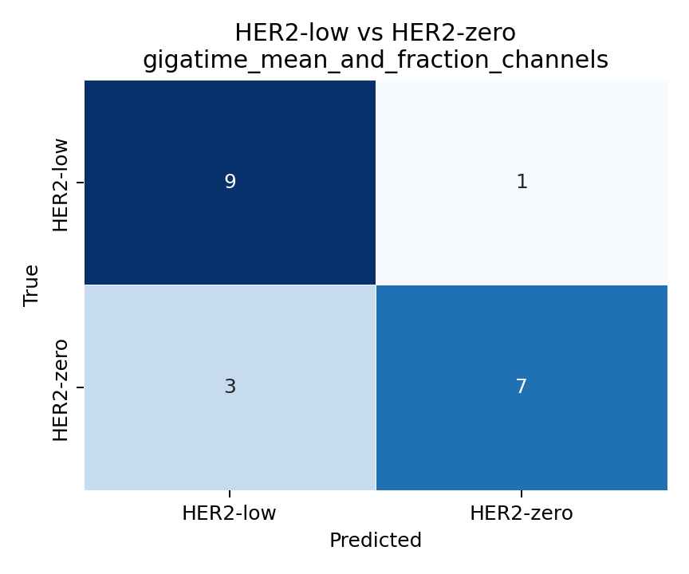
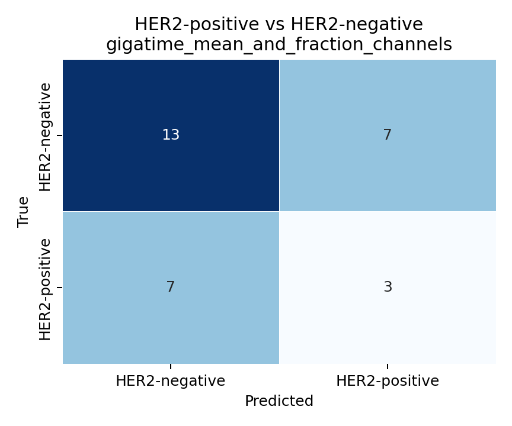
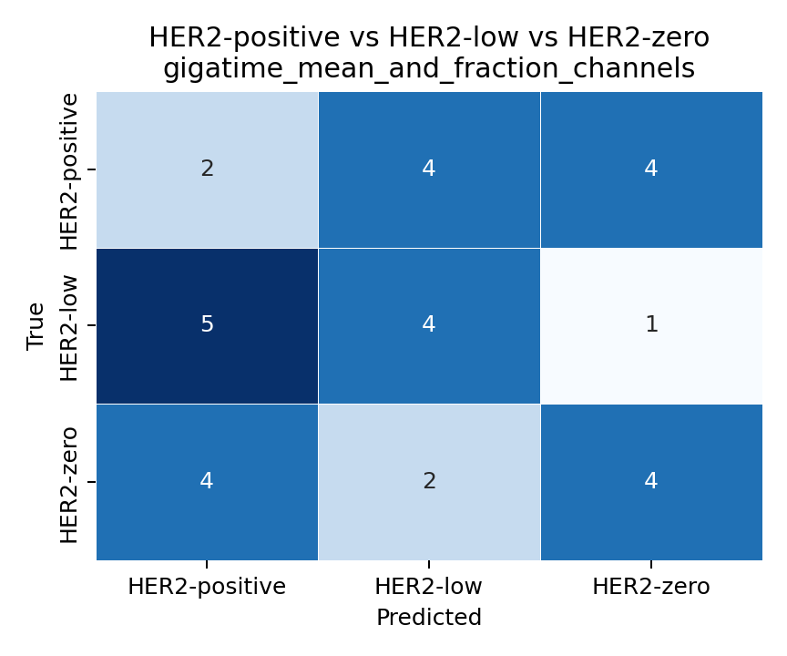
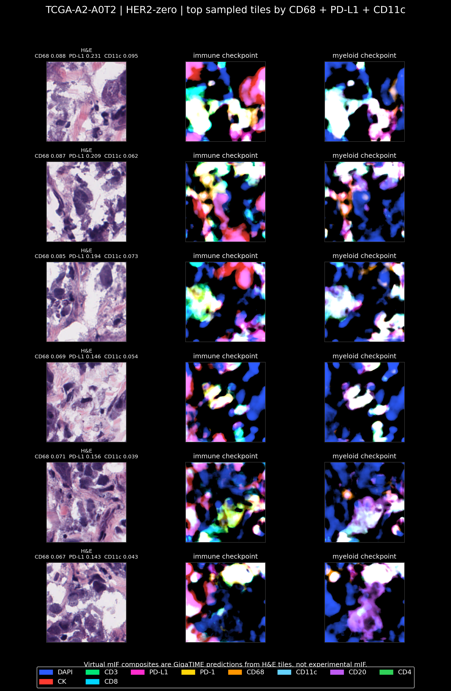
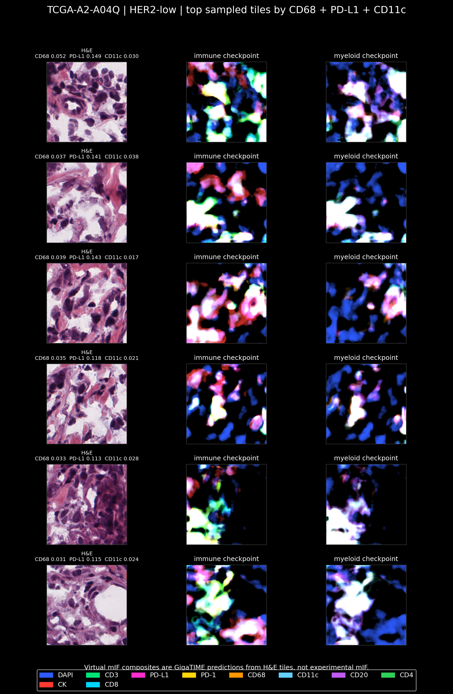
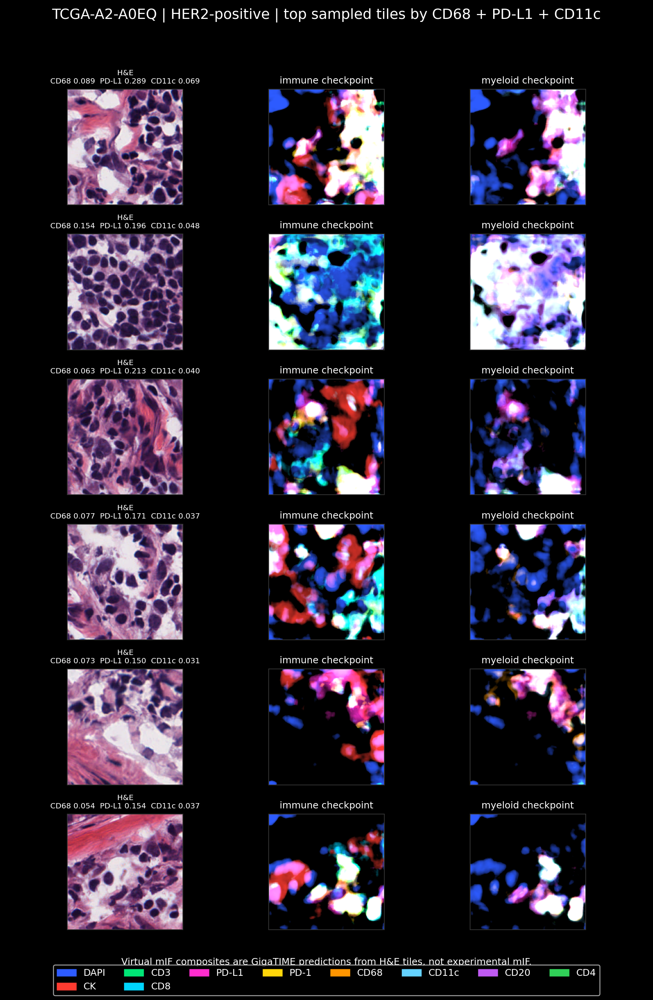

Clinical HER2 GigaTIME Findings
Simple summary of the TCGA-BRCA pilot so far: 30 slides, three clinical HER2 groups, GigaTIME virtual mIF outputs, RNA validation, RNA program validation, visual QC, a 256-tile robustness check, and a first classifier baseline.
Bottom Line
Main signal: HER2-zero had higher GigaTIME-predicted immune/checkpoint-like signal than HER2-low, especially CD68, PD-L1, and CD11c. The same pattern persisted when the same 30 slides were rerun with up to 256 tissue tiles per slide.
Important caution: Marker-level and broader RNA-program validation were still weak, and the pairwise tests still did not survive multiple-testing correction. This is a proposal-ready hypothesis, not a validated biological claim.
Study Design
- Dataset: TCGA-BRCA breast cancer.
- Groups: 10 HER2-positive, 10 HER2-low, and 10 HER2-zero cases.
- Input: diagnostic H&E whole-slide images.
- Model: released GigaTIME virtual mIF model.
- Sampling: first 64 random tissue tiles per slide, then a 256-tile robustness rerun on the same 30 slides.
Top Three-Group Differences
| Channel | Kruskal p | BH q | Highest group | Lowest group | Max-min mean |
|---|---|---|---|---|---|
| CD68 | 0.0242 | 0.1647 | HER2-zero | HER2-low | 0.0091 |
| PD-L1 | 0.0423 | 0.1647 | HER2-zero | HER2-low | 0.0175 |
| CD11c | 0.0494 | 0.1647 | HER2-zero | HER2-low | 0.0045 |
| CD4 | 0.0794 | 0.1722 | HER2-zero | HER2-low | 0.0274 |
| Ki67 | 0.0920 | 0.1722 | HER2-zero | HER2-low | 0.0042 |
| PD-1 | 0.1033 | 0.1722 | HER2-zero | HER2-low | 0.0428 |
| CD20 | 0.1466 | 0.2094 | HER2-zero | HER2-low | 0.0245 |
| CD3 | 0.1876 | 0.2345 | HER2-zero | HER2-low | 0.0266 |
Group-Level Virtual mIF Summary
This heatmap summarizes mean virtual-channel activation by clinical HER2 group.

Channel Distributions
Each dot is one TCGA case. The spread shows why this remains a pilot.

256-Tile Robustness Check
We reran the same 30 selected slides with up to 256 random tissue tiles per slide. This checks whether the 64-tile result was sensitive to sparse sampling.
| Channel | 64-tile p | 256-tile p | 64 max-min | 256 max-min | 256 highest | 256 lowest |
|---|---|---|---|---|---|---|
| CD68 | 0.0242 | 0.0167 | 0.0091 | 0.0104 | HER2-zero | HER2-low |
| PD-L1 | 0.0423 | 0.0211 | 0.0175 | 0.0206 | HER2-zero | HER2-low |
| CD11c | 0.0494 | 0.0384 | 0.0045 | 0.0050 | HER2-zero | HER2-low |
| CD3 | 0.1876 | 0.0686 | 0.0266 | 0.0329 | HER2-zero | HER2-low |
| CD4 | 0.0794 | 0.0819 | 0.0274 | 0.0328 | HER2-zero | HER2-low |
| Ki67 | 0.0920 | 0.1033 | 0.0042 | 0.0040 | HER2-zero | HER2-low |
CD68, PD-L1, and CD11c kept the same direction: HER2-zero highest and HER2-low lowest. Their p values became smaller and their group mean gaps became larger.
256-Tile Group-Level Summary
| Channel | Kruskal p | BH q | Highest group | Lowest group | Max-min mean |
|---|---|---|---|---|---|
| CD68 | 0.0167 | 0.1057 | HER2-zero | HER2-low | 0.0104 |
| PD-L1 | 0.0211 | 0.1057 | HER2-zero | HER2-low | 0.0206 |
| CD11c | 0.0384 | 0.1279 | HER2-zero | HER2-low | 0.0050 |
| PD-1 | 0.0649 | 0.1365 | HER2-zero | HER2-low | 0.0528 |
| CD3 | 0.0686 | 0.1365 | HER2-zero | HER2-low | 0.0329 |
| CD4 | 0.0819 | 0.1365 | HER2-zero | HER2-low | 0.0328 |
| Ki67 | 0.1033 | 0.1476 | HER2-zero | HER2-low | 0.0040 |
| CD20 | 0.1310 | 0.1638 | HER2-zero | HER2-low | 0.0281 |


Top Pairwise Tests
| Channel | Comparison | Delta mean | Mann-Whitney p | BH q |
|---|---|---|---|---|
| CD68 | HER2-low vs HER2-zero | -0.0091 | 0.0091 | 0.2113 |
| CD11c | HER2-low vs HER2-zero | -0.0045 | 0.0173 | 0.2113 |
| PD-L1 | HER2-low vs HER2-zero | -0.0175 | 0.0211 | 0.2113 |
| CD4 | HER2-low vs HER2-zero | -0.0274 | 0.0312 | 0.2258 |
| Ki67 | HER2-low vs HER2-zero | -0.0042 | 0.0376 | 0.2258 |
| PD-1 | HER2-low vs HER2-zero | -0.0428 | 0.0539 | 0.2695 |
The strongest pairwise tests were mostly HER2-low versus HER2-zero, but none were FDR-significant.
256-Tile Top Pairwise Tests
| Channel | Comparison | Delta mean | Mann-Whitney p | BH q |
|---|---|---|---|---|
| CD68 | HER2-low vs HER2-zero | -0.0104 | 0.0073 | 0.1133 |
| PD-L1 | HER2-low vs HER2-zero | -0.0206 | 0.0091 | 0.1133 |
| CD11c | HER2-low vs HER2-zero | -0.0050 | 0.0113 | 0.1133 |
| PD-1 | HER2-low vs HER2-zero | -0.0528 | 0.0257 | 0.1560 |
| CD3 | HER2-low vs HER2-zero | -0.0329 | 0.0312 | 0.1560 |
| CD4 | HER2-low vs HER2-zero | -0.0328 | 0.0312 | 0.1560 |
The top 256-tile pairwise tests again focused on HER2-low versus HER2-zero. The leading BH q values improved to about 0.113 for CD68, PD-L1, and CD11c, but still did not cross 0.05.
RNA Validation
We compared virtual channels with matched RNA-seq marker signatures. No channel was FDR-significant.
| Channel | Spearman rho | p | BH q |
|---|---|---|---|
| Ki67 | 0.294 | 0.1144 | 0.5719 |
| PD-L1 | 0.127 | 0.5020 | 0.7215 |
| CD8 | 0.019 | 0.9191 | 0.9284 |
| CD68 | -0.017 | 0.9284 | 0.9284 |
| PD-1 | -0.105 | 0.5800 | 0.7250 |
| CD4 | -0.127 | 0.5051 | 0.7215 |
| CD11c | -0.157 | 0.4078 | 0.7215 |
| CK | -0.168 | 0.3737 | 0.7215 |
| CD3 | -0.198 | 0.2937 | 0.7215 |
| CD20 | -0.325 | 0.0801 | 0.5719 |

256-Tile RNA Validation
The 256-tile rerun did not solve the RNA-discordance problem. No channel was FDR-significant against its matched RNA marker signature.
| Channel | Spearman rho | p | BH q |
|---|---|---|---|
| Ki67 | 0.252 | 0.1790 | 0.5968 |
| PD-L1 | 0.103 | 0.5897 | 0.7371 |
| CD8 | -0.017 | 0.9284 | 0.9284 |
| CD68 | -0.036 | 0.8510 | 0.9284 |
| PD-1 | -0.111 | 0.5576 | 0.7371 |
| CK | -0.172 | 0.3623 | 0.6038 |
| CD11c | -0.184 | 0.3292 | 0.6038 |
| CD4 | -0.217 | 0.2486 | 0.6038 |
| CD3 | -0.273 | 0.1438 | 0.5968 |
| CD20 | -0.337 | 0.0686 | 0.5968 |

Broader RNA Program Validation
We also tested broader RNA programs, including T-cell/cytotoxic, checkpoint/IFNG, myeloid/macrophage, B-cell, proliferation, epithelial, stromal, and endothelial signatures.
| Virtual program | RNA program | Spearman rho | p | BH q |
|---|---|---|---|---|
| Virtual T cell/checkpoint | Endothelial | -0.585 | 6.88e-04 | 0.0309 |
| Virtual all immune/checkpoint | Endothelial | -0.556 | 0.0014 | 0.0320 |
| Virtual T cell/checkpoint | B cell | -0.399 | 0.0288 | 0.3769 |
| Virtual proliferation | Endothelial | -0.375 | 0.0410 | 0.3769 |
| Virtual all immune/checkpoint | B cell | -0.361 | 0.0503 | 0.3769 |
| Virtual epithelial | Proliferation | 0.349 | 0.0590 | 0.3769 |
| Virtual all immune/checkpoint | Proliferation | 0.335 | 0.0705 | 0.3769 |
| Virtual myeloid/checkpoint | Endothelial | -0.332 | 0.0729 | 0.3769 |
This still did not positively validate the virtual immune/checkpoint signal. The strongest FDR-significant associations were negative correlations between virtual immune/checkpoint programs and endothelial RNA signal.

RNA Programs Across HER2 Groups
| RNA program | Kruskal p | BH q | Highest group | Lowest group | Max-min mean |
|---|---|---|---|---|---|
| Proliferation | 0.1063 | 0.9569 | HER2-zero | HER2-low | 0.922 |
| Myeloid / macrophage | 0.4116 | 0.9987 | HER2-low | HER2-positive | 0.393 |
| B cell | 0.4317 | 0.9987 | HER2-low | HER2-zero | 0.570 |
| Dendritic / APC | 0.5697 | 0.9987 | HER2-low | HER2-zero | 0.407 |
| Stromal / fibroblast | 0.7076 | 0.9987 | HER2-positive | HER2-zero | 0.237 |
| Endothelial | 0.7224 | 0.9987 | HER2-low | HER2-zero | 0.245 |
| Checkpoint / IFNG | 0.9031 | 0.9987 | HER2-zero | HER2-positive | 0.177 |
| T cell / cytotoxic | 0.9351 | 0.9987 | HER2-low | HER2-positive | 0.281 |
No broad RNA immune program showed an FDR-significant HER2-group difference in this 30-case pilot.

Virtual Programs Across HER2 Groups
| Virtual program | Kruskal p | BH q | Highest group | Lowest group | Max-min mean |
|---|---|---|---|---|---|
| Virtual myeloid/checkpoint | 0.0176 | 0.0878 | HER2-zero | HER2-low | 0.012 |
| Virtual all immune/checkpoint | 0.0568 | 0.1292 | HER2-zero | HER2-low | 0.023 |
| Virtual T cell/checkpoint | 0.0992 | 0.1292 | HER2-zero | HER2-low | 0.031 |
| Virtual proliferation | 0.1033 | 0.1292 | HER2-zero | HER2-low | 0.004 |
| Virtual epithelial | 0.2883 | 0.2883 | HER2-zero | HER2-low | 0.052 |
The virtual myeloid/checkpoint composite kept the HER2-zero greater than HER2-low direction, but remained short of FDR significance.

First HER2 Classifier Baseline
We trained a first slide-level classifier using GigaTIME features and leave-one-out cross-validation. This is a diagnostic-model style check, but still only a 30-case pilot.
| Task | Best GigaTIME/H&E feature set | Accuracy | Balanced accuracy | Macro AUC | Sensitivity | Specificity |
|---|---|---|---|---|---|---|
| HER2-positive vs HER2-negative | gigatime_mean_and_fraction_channels | 0.533 | 0.475 | 0.430 | 0.300 | 0.650 |
| HER2-low vs HER2-zero | gigatime_mean_and_fraction_channels | 0.800 | 0.800 | 0.870 | 0.700 | 0.900 |
| HER2-positive vs HER2-low vs HER2-zero | gigatime_mean_and_fraction_channels | 0.333 | 0.333 | 0.555 |
GigaTIME features were promising for HER2-low versus HER2-zero, but did not reliably classify HER2-positive versus HER2-negative or the full three-class HER2 grouping.

GigaTIME/H&E Classifier Confusion Matrices
These confusion matrices show the best GigaTIME/H&E regularized logistic model for each task. They do not use the ERBB2 RNA reference feature.
HER2-low vs HER2-zero

HER2-positive vs HER2-negative

Three-class HER2

ERBB2 RNA Reference Classifier
ERBB2 RNA was included only as a non-H&E reference. It is not an image-based model.
| Task | Accuracy | Balanced accuracy | Macro AUC |
|---|---|---|---|
| HER2-positive vs HER2-negative | 0.900 | 0.850 | 0.800 |
| HER2-low vs HER2-zero | 0.650 | 0.650 | 0.690 |
| HER2-positive vs HER2-low vs HER2-zero | 0.233 | 0.233 | 0.567 |
ERBB2 RNA predicted HER2-positive versus HER2-negative better than the current GigaTIME/H&E features, which means the image-derived classifier is not capturing that diagnostic signal reliably yet.
Visual QC
Top cases were selected by combined CD68 + PD-L1 + CD11c virtual signal.
| Group | Case | Combined | CD68 | PD-L1 | CD11c |
|---|---|---|---|---|---|
| HER2-positive | TCGA-A2-A0EQ | 0.115 | 0.029 | 0.072 | 0.014 |
| HER2-low | TCGA-A2-A04Q | 0.086 | 0.018 | 0.058 | 0.010 |
| HER2-zero | TCGA-A2-A0T2 | 0.126 | 0.037 | 0.069 | 0.021 |
The high-scoring tiles contain tissue and cells rather than obvious blank background. This supports follow-up, but it is not biological validation.
256-Tile Visual QC
The 256-tile visual QC selected the same representative cases. The HER2-zero representative showed a clearer combined CD68 + PD-L1 + CD11c signal.
| Group | Case | Combined | CD68 | PD-L1 | CD11c |
|---|---|---|---|---|---|
| HER2-positive | TCGA-A2-A0EQ | 0.110 | 0.028 | 0.069 | 0.013 |
| HER2-low | TCGA-A2-A04Q | 0.080 | 0.017 | 0.054 | 0.009 |
| HER2-zero | TCGA-A2-A0T2 | 0.140 | 0.041 | 0.077 | 0.022 |

Example QC Panels
HER2-zero

HER2-low

HER2-positive

What To Say
- We completed the balanced 30-case clinical HER2 pilot.
- The leading signal is HER2-zero greater than HER2-low for virtual CD68, PD-L1, and CD11c.
- The 256-tile robustness run reproduced and strengthened that same direction.
- Visual QC makes the signal look plausible enough to follow.
- Marker-level and RNA-program validation did not confirm the signal strongly, so the claim must stay cautious.
- A first classifier showed possible HER2-low versus HER2-zero signal, but not reliable HER2-positive or three-class diagnosis.
Next Step
The 256-tile robustness check, richer RNA-program validation, and first classifier baseline are complete. The next step is trustworthiness review and better classifier inputs: pathologist review of high-signal tiles, tumor-rich tile selection, tumor-purity or immune-deconvolution adjustment, and ideally an external dataset with paired H&E and real mIF.
Proposal framing: GigaTIME produced a reproducible but unvalidated virtual immune/checkpoint signal separating HER2-zero from HER2-low in a balanced TCGA-BRCA pilot, motivating pathologist review and orthogonal validation.